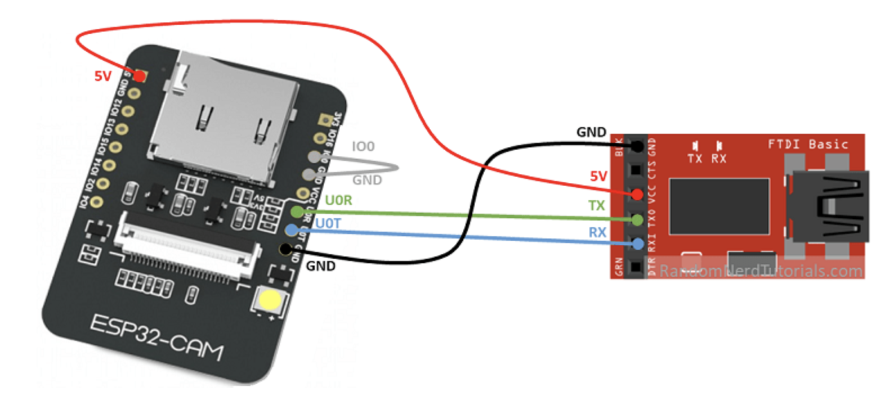
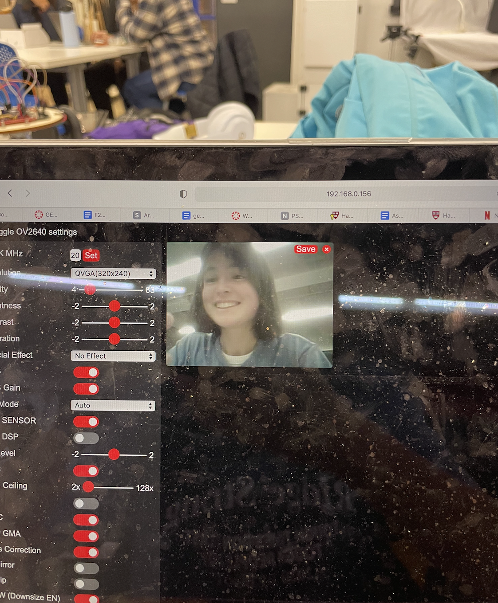
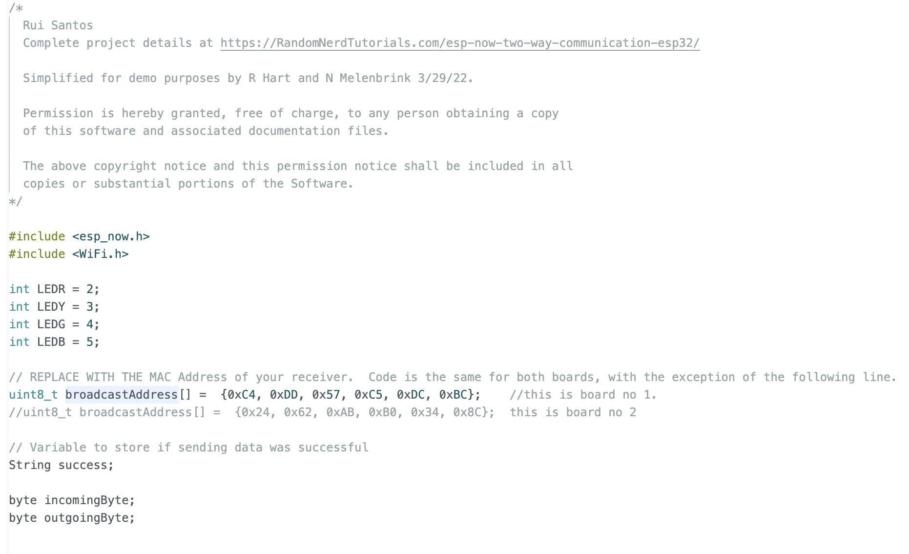
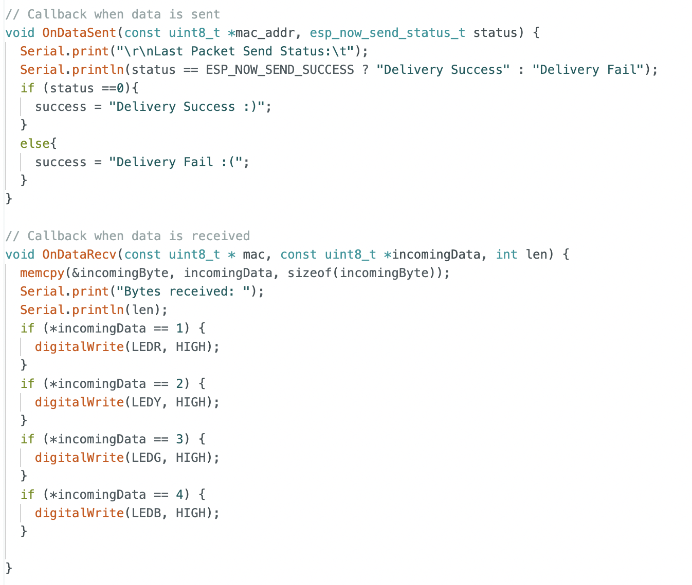
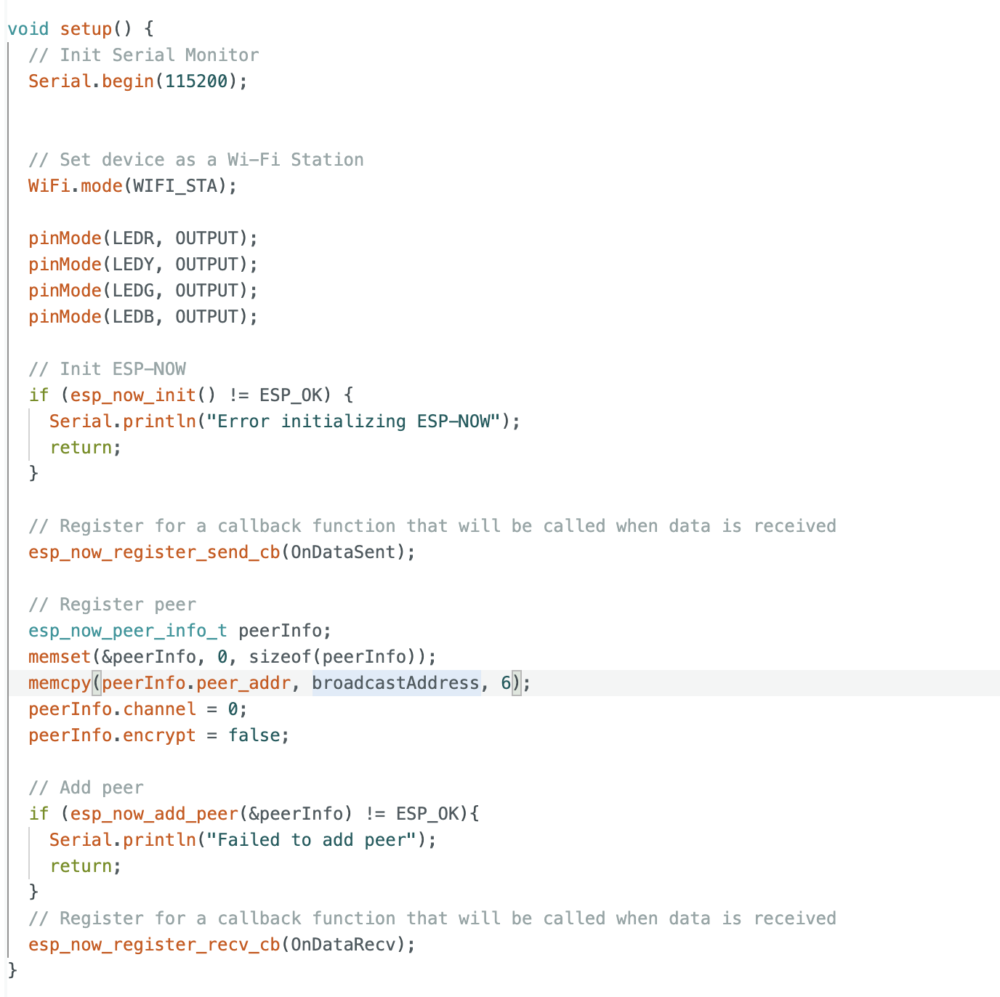
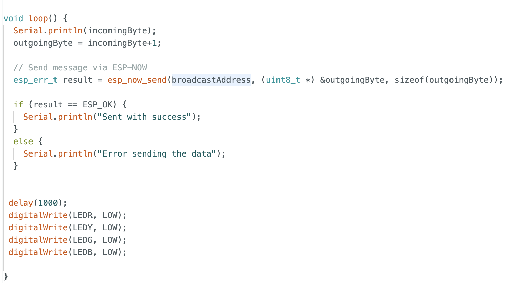

First, in order to get more familiar with using ESP devices as a whole, I followed the tutorial to set up the CAM. I used the code included in the tutorial, of course replacing the ssid and password with my own network credentials. This is the schematic I followed to connect the ESP32 to my computer using an FTDI programmer.
After setting this up, it was time to upload my code. I learned that the self-grounding connection (IO0 to GND on the ESP32 board) needed to be established every time I wanted to upload new code, but then should be disconnected once the code was properly uploaded. I also learned that in order to upload code, you need to press the Reset button on the ESP32 board for about 2 seconds while the code says "Connecting...", and then release it. Otherwise, the code will not be successfully uploaded. This caused me a lot of problems, but with help from Maegan and Bobby, I was ultimately able to get it working. The next step was to use the code to get my IP address. To do this, I learned I had to go to Serial Monitor at a baud rate of 115200, then press the Reset button on the ESP32 once more. The IP code was then displayed in my Serial Monitor, and I could follow the link to use the camera display! Here is a picture of the camera interface on my computer, displaying my own face (sorry about the dirty laptop screen).
It was fascinating to me that such a tiny piece of metal, connected with a few wires to my computer, could serve as an actual camera! However, the ESP32-Cam was extremely finicky when it came to uploading code, and so for the next part of this week's assignment I decided to pivot to the ESP32-Xiao (which was also helpful in terms of broadening my exposure to different types of ESP32s).
For our project, Maegan and I decided to make two separate devices, one with buttons and one with LEDs. The devices are connected by Wifi, meaning that pressing the buttons on the first device will light up different LEDs on the second device without having to rely on a wired connection. I built the LED device, using a breadboard with 4 LEDs of different colors, connected to an ESP32-Xiao. Here is the code that I uploaded to the Xiao.
   Essentially, my board connects to Maegan's board by using her broadcast address. When she presses a button on her breadboard, this sends a signal in the form of a byte to my device. The signal being sent is "1", "2", "3", or "4" depending on which of four buttons she presses. My device will read this signal and convert it into a response. Depending on what signal is received, my device will write a HIGH value to one of the four LED pins, thus turning it on. After a 1000 ms delay, all the lights are turned off again, and the device is ready to receive more signals. Here is a video of the device at work!